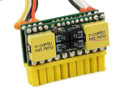

Introduction
The mechanical design module of the AUV includes designing, prototyping and manufacturing the pressure hulls, modular frame and variety of enclosures to house various sensors. Amogh has a dual hull, heavy bottom, multiple thruster design with six thrusters providing control in four degrees of freedom. The upper hull houses the electronics whereas the lower hull stores heavy components like batteries, thus lowering the center of mass and inhibiting roll and pitch motions.| Parameter | Specification |
|---|---|
| Weight | 34.5 kg |
| Buoyancy | 80 gms |
| Dimension | 1000 X 520 X 530 [mm] |
| Degrees of Freedom (DOF) | 4 [Surge, Heave, Sway, Yaw] |
| Max. Depth | 20 m |
| Speed | 0.5 - 1 m/s |
Pressure Hull
Hulls provide a watertight enclosure for the electronics payloads of the AUV. It has to function in various ways:
Bottom hull is serving the purpose of battery pod of the vehicle. It is made up of Stainless Steel with density of 8000 kg/m3 to satisfy the needs of the heavy bottom design.
Waterproofing
Face Seal Mechanism has been incorporated to fulfil the water sealing requirements of the AUV. A customized Poly Propylene end cap with grooves to accommodate two rubber O-rings is attached permanently at the aft end of the top hull. It is covered with a flat aluminium disc, which consists of 8 co-axial holes, to mechanically squeeze the O-rings and ensure water tightness. Front dome and aft end cap are attached to the hull using an epoxy sealant.
- Provide static and dynamic stability to the vehicle.
- Modular enough to allow upgradability and extensibility in the design.
- Provide good manoeuvrability to help achieve the wide applications of an AUV.
- Provide least drag against velocity while in motion.
- Provide watertight secure space for the storage of batteries, electronics and other components.
- Simple and easy to manufacture.
Bottom hull is serving the purpose of battery pod of the vehicle. It is made up of Stainless Steel with density of 8000 kg/m3 to satisfy the needs of the heavy bottom design.
Waterproofing
Face Seal Mechanism has been incorporated to fulfil the water sealing requirements of the AUV. A customized Poly Propylene end cap with grooves to accommodate two rubber O-rings is attached permanently at the aft end of the top hull. It is covered with a flat aluminium disc, which consists of 8 co-axial holes, to mechanically squeeze the O-rings and ensure water tightness. Front dome and aft end cap are attached to the hull using an epoxy sealant.
Frame Design
The frame constitutes the supporting structure of the AUV on which the hulls and other peripherals are mounted. It is constructed of water jet machined, industrial grade, aluminium sheet. The frame design has been iterated and analyzed using the StarCCM+ software to obtain optimum drag in all the directions of motion.
In order to estimate the resistance in the forward direction, the inlet velocities chosen were 0.5, 1 and 1.5 m/s for all versions of the vehicle. The obtained results have been compared and analyzed to enhance its performance. An overall reduction of 35% in power required is obtained from version 1 to version 3.
Thruster Configuration:
The vehicle uses 5 SeaBotix BTD150 thrusters for achieving control in 4 degrees of freedom. Two thrusters placed on either side of the frame provide independent surge motion control and yaw motion control in the steering plane. A fore and an aft thruster mounted axially upwards provide Heave control in the diving plane. The other two thrusters placed symmetrically on either sides of the line joining the CG and CB of the vehicle facilitate sway motion. The heavy bottom design of the AUV eliminates Roll and Pitch motion.
The vehicle uses 5 SeaBotix BTD150 thrusters for achieving control in 4 degrees of freedom. Two thrusters placed on either side of the frame provide independent surge motion control and yaw motion control in the steering plane. A fore and an aft thruster mounted axially upwards provide Heave control in the diving plane. The other two thrusters placed symmetrically on either sides of the line joining the CG and CB of the vehicle facilitate sway motion. The heavy bottom design of the AUV eliminates Roll and Pitch motion.
Structural Design
A structural analysis of the hull was carried out to determine the appropriate thickness required for withstanding the hydrostatic pressure at a depth of 10 - 20m. This was carried out using the simulation package of SolidWorks software.
The results obtained imply that 5 mm thickness of the hull is significant for it to withstand the operational pressure up to a water depth of 20m. The deformation obtained from SolidWorks Simulation was scaled up by a factor of 708.176, in order to make the deformation of the body visible. Higher the deformation scale, lower is the actual deformation.
Pneumatics
Pneumatics converts energy stored in the form of compressed air to mechanical energy. Marker dropper and torpedo launching modules of Amogh work on pneumatics. Five 2/2 way solenoid valves, along with Poly-Urethane tubes, pneumatic pistons and a distributor form the core part of the pneumatics actuating system.
Pneumatics system in Amogh 2.0 uses compressed air pressure tank. This pressure is regulated down to 6 bars using a pressure regulator. Regulated air supply is then connected to a 2/2 solenoid valve, which acts as a switch and disrupts the air supply in event of a failure. It directs the air supply to a distributor which distributes the pressurised air to four independent 2/2 solenoid valves. Outputs of these solenoid valves are connected to corresponding pneumatic actuators of marker dropper and torpedo launcher.
Pneumatics system in Amogh 2.0 uses compressed air pressure tank. This pressure is regulated down to 6 bars using a pressure regulator. Regulated air supply is then connected to a 2/2 solenoid valve, which acts as a switch and disrupts the air supply in event of a failure. It directs the air supply to a distributor which distributes the pressurised air to four independent 2/2 solenoid valves. Outputs of these solenoid valves are connected to corresponding pneumatic actuators of marker dropper and torpedo launcher.

Marker Dropper
Pneumatics converts energy stored in the form of compressed air to mechanical energy. Marker dropper and torpedo launching modules of Amogh work on pneumatics. Five 2/2 way solenoid valves, along with Poly-Urethane tubes, pneumatic pistons and a distributor form the core part of the pneumatics actuating system.
Pneumatics system in Amogh 2.0 uses compressed air pressure tank. This pressure is regulated down to 6 bars using a pressure regulator. Regulated air supply is then connected to a 2/2 solenoid valve, which acts as a switch and disrupts the air supply in event of a failure. It directs the air supply to a distributor which distributes the pressurised air to four independent 2/2 solenoid valves. Outputs of these solenoid valves are connected to corresponding pneumatic actuators of marker dropper and torpedo launcher.
Pneumatics system in Amogh 2.0 uses compressed air pressure tank. This pressure is regulated down to 6 bars using a pressure regulator. Regulated air supply is then connected to a 2/2 solenoid valve, which acts as a switch and disrupts the air supply in event of a failure. It directs the air supply to a distributor which distributes the pressurised air to four independent 2/2 solenoid valves. Outputs of these solenoid valves are connected to corresponding pneumatic actuators of marker dropper and torpedo launcher.
Torpedo
The important points which catered to the design of torpedo are:
It is manufactured using High Density Polyethylene (HDPE of mass density 0.97 kg/m3). Drag coefficient of the torpedo calculated using SolidWorks Flow Simulation is found to be 0.088.
Launching Mechanism
The mechanism used for launching the torpedo is based on pneumatic actuation. Pneumatics system of Amogh uses compressed air stored at high pressure inside a pressure tank. This pressure is regulated to a lower pressure of 8 bars by using a regulator.
- Neutral buoyancy.
- Least possible drag against motion.
- Fins to counteract the moment applied by drag force on its surface.
- Ability to cover straight line path of at least 2-3 meters.
It is manufactured using High Density Polyethylene (HDPE of mass density 0.97 kg/m3). Drag coefficient of the torpedo calculated using SolidWorks Flow Simulation is found to be 0.088.
Launching Mechanism
The mechanism used for launching the torpedo is based on pneumatic actuation. Pneumatics system of Amogh uses compressed air stored at high pressure inside a pressure tank. This pressure is regulated to a lower pressure of 8 bars by using a regulator.
Enclosures
Camera Enclosure
The AUV comprises of two cameras providing view ahead and below the vehicle, which facilitates the navigation of the vehicle. A transparent, watertight camera enclosure has been designed to enable the cameras to capture undistorted images. It is a cylindrical assembly, manufactured using Nylocast material, and with a transparent acrylic screen in front of the lens. A provision for a thin filter film has been incorporated in the design.
IMU Enclosure
IMU enclosure facilitates a watertight casing for the IMU and serves as a faraday's cage to inhibit magnetic interferences. Aluminium has been wisely chosen as the material for its manufacturing.
The AUV comprises of two cameras providing view ahead and below the vehicle, which facilitates the navigation of the vehicle. A transparent, watertight camera enclosure has been designed to enable the cameras to capture undistorted images. It is a cylindrical assembly, manufactured using Nylocast material, and with a transparent acrylic screen in front of the lens. A provision for a thin filter film has been incorporated in the design.
IMU Enclosure
IMU enclosure facilitates a watertight casing for the IMU and serves as a faraday's cage to inhibit magnetic interferences. Aluminium has been wisely chosen as the material for its manufacturing.

Introduction
The electrical sub-system facilitates control and navigation of the vehicle using mission software and helps keeping a track of the vehicle state using various sensors. This module comprises of a CPU, a Micro-controller, Power Supply Units, sensors and other essential electrical peripherals. Hardware used is in accordance with the demands of computing required for Image Processing and restrictions imposed by the power backup system to sustain the mission.CPU & Microcontroller
Motherboard:
Motherboard extends the functionality of the microprocessor by providing various connectors/ports to access the CPU features. Features include serial/parallel/USB communication interface, graphics processor, cooling arrangements, system memory (RAM), Ethernet and presence of additional features like Wi-Fi and extra serial expansion buses.
Amogh uses Intel Atom Dual Core 2.13 GHz processor mounted on a Zotac 2700 Wi-Fi Extreme motherboard loaded with 2GB of DDR3 RAM.
Power supply:
The motherboard requires ATX power supply, the specification of which states the requirement of three main voltages – 3.3V, 5V and 12V. It fetches the required power using an external 20 pin DC-ATX power supply converter, picoPSU-120 from Minibox.
Microcontroller:
The Arduino Mega-2560, an 8-bit microcontroller with the clock speed of 16 MHz, is chosen to be the main controller of the AUV due to unavailability of digital and analog I/O pins on the on-board processor. Being directed by the main on-board computer serially, it takes logic inputs from pressure sensor and other peripherals, executes the code and hence, accordingly controls the motion of the vehicle. This enables the motherboard to focus extensively on image processing and other high level mission tasks.

Motherboard extends the functionality of the microprocessor by providing various connectors/ports to access the CPU features. Features include serial/parallel/USB communication interface, graphics processor, cooling arrangements, system memory (RAM), Ethernet and presence of additional features like Wi-Fi and extra serial expansion buses.
Amogh uses Intel Atom Dual Core 2.13 GHz processor mounted on a Zotac 2700 Wi-Fi Extreme motherboard loaded with 2GB of DDR3 RAM.
Power supply:
The motherboard requires ATX power supply, the specification of which states the requirement of three main voltages – 3.3V, 5V and 12V. It fetches the required power using an external 20 pin DC-ATX power supply converter, picoPSU-120 from Minibox.
Microcontroller:
The Arduino Mega-2560, an 8-bit microcontroller with the clock speed of 16 MHz, is chosen to be the main controller of the AUV due to unavailability of digital and analog I/O pins on the on-board processor. Being directed by the main on-board computer serially, it takes logic inputs from pressure sensor and other peripherals, executes the code and hence, accordingly controls the motion of the vehicle. This enables the motherboard to focus extensively on image processing and other high level mission tasks.
Propulsion
A Motor Controller board based on ST Microelectronics VNH5019A-E has been designed to drive the propulsion system of Amogh. It can take a wide voltage supply range of 6 V-30 V, supported with peak current of 30 A and continuous output current of 12 A at a maximum PWM frequency of 20 KHz. It consists of on-board short circuit, over heating, and under voltage protection peripherals. A motor controller across each thruster efficiently drive the propulsion system of Amogh.
The size of the board was reduced to more than 50% as compared to its first version, mainly through the use of surface mount components.
The size of the board was reduced to more than 50% as compared to its first version, mainly through the use of surface mount components.
Onboard Sensing Tools
Pressure Sensor
Amogh uses a piezo-resistive non-submersible analog pressure sensor from Omega Engineering of PX-319 series. It can measure gauge pressure up to 1 bar with an accuracy of 0.25%. Powered at 12VDC, it gives the analog output in terms of 0-5VDC.
Inertial Measurement Unit
VN-100 rugged from Vector-NAV is used in Amogh. Its a miniature, high performance IMU with the attitude and heading reference system. It is capable of providing drift free high accuracy orientation output and maintains the heading. It combines 3-axis accelerometer, 3-axis gyroscope and a 3- axis magnetometer with a 32-bit processor.
Cameras
Amogh uses a Microsoft Lifecam as front facing camera and Logitech B910 HD webcam for bottom view. Both the cameras are capable of capturing video feed with 720p resolution and supports a video resolution of 640 x 480 which is optimum for image processing. Interfaced through USB 2.0, the cameras provides a consistent frame rate of up to 30 fps.
Current Sensor
Amogh uses ACS710 based Hall effect current sensors across the thrusters, batteries and the motherboard. They help to keep a track on the amount a current flowing through each device.
Voltage Sensor
A simple voltage divider circuit has been be used as voltage sensor to regularly monitor the voltage of the batteries and provide feedback to the microcontroller.
Leak Detection Sensor
A leak detection circuit is employed to detect if water accidentally seeps into the hull. Two circular probes mounted near the end cap of the hull monitor the intrusion of water inside. The feedback obtained in terms of voltage due to the conductivity of water is amplified and is provided as an input to the microcontroller.
Amogh uses a piezo-resistive non-submersible analog pressure sensor from Omega Engineering of PX-319 series. It can measure gauge pressure up to 1 bar with an accuracy of 0.25%. Powered at 12VDC, it gives the analog output in terms of 0-5VDC.
Inertial Measurement Unit
VN-100 rugged from Vector-NAV is used in Amogh. Its a miniature, high performance IMU with the attitude and heading reference system. It is capable of providing drift free high accuracy orientation output and maintains the heading. It combines 3-axis accelerometer, 3-axis gyroscope and a 3- axis magnetometer with a 32-bit processor.
Cameras
Amogh uses a Microsoft Lifecam as front facing camera and Logitech B910 HD webcam for bottom view. Both the cameras are capable of capturing video feed with 720p resolution and supports a video resolution of 640 x 480 which is optimum for image processing. Interfaced through USB 2.0, the cameras provides a consistent frame rate of up to 30 fps.
Current Sensor
Amogh uses ACS710 based Hall effect current sensors across the thrusters, batteries and the motherboard. They help to keep a track on the amount a current flowing through each device.
Voltage Sensor
A simple voltage divider circuit has been be used as voltage sensor to regularly monitor the voltage of the batteries and provide feedback to the microcontroller.
Leak Detection Sensor
A leak detection circuit is employed to detect if water accidentally seeps into the hull. Two circular probes mounted near the end cap of the hull monitor the intrusion of water inside. The feedback obtained in terms of voltage due to the conductivity of water is amplified and is provided as an input to the microcontroller.

Power Management
The power management system of Amogh has been designed for an endurance of 60 minutes at maximum continuous load. The required current capacity of 32 AHr is obtained from four Lithium-Polymer (Li-Po) batteries. The thrusters are powered through two 5S Li-Po batteries in parallel whereas two 3S batteries in parallel have been used to power all other necessary electrical peripherals. The current and voltage across batteries, thrusters and other electrical peripherals are regularly monitored through adequate sensors and the data is logged for further analysis. This data is used to monitor and analyze the performance, health of various peripherals on the vehicle and use the results to develop an efficient power management system. All data sampled by the micro-controller is transmitted over a serial link to the motherboard hard disk.
Power Distribution Board:
Apart from thrusters, the major power consuming unit is the motherboard with CPU. All other electrical peripherals have significantly low power consumption. The power distribution board sources, regulates and distributes power to various devices. The board implements current/voltage sensors, under voltage protection and magnetic reed switch based trigger.
Power Distribution Board:
Apart from thrusters, the major power consuming unit is the motherboard with CPU. All other electrical peripherals have significantly low power consumption. The power distribution board sources, regulates and distributes power to various devices. The board implements current/voltage sensors, under voltage protection and magnetic reed switch based trigger.
Primary Control Board
This board acts as a platform through which the microcontroller, Arduino Mega 2560 controls the motion of the vehicle by manipulating the thruster RPM using dedicated motor controllers for each thruster, as per the commands directed from the main computer. It also facilitates the actuation of the pneumatic sub-system to trigger the torpedo and marker mechanisms. The board interfaces with various sensors used on the vehicle. Capability to take high currents up to 20A and incorporation of current sensors to receive continuous feedback about the current consumption of each thruster are the salient features of the board.
Debugging
The feedback from the sensors through a multiplex channel via micro-controller reaches the main on-board computer over a serial line where it is stored in the system hard disk. The data stored is used after the mission to monitor the system characteristics and for debugging purposes.
Display LCD module is used to display the current AUV state parameters and sensor values. A 3.2” LCD (uLCD-32PT (GFX)) has been used for the same purpose.
Display LCD module is used to display the current AUV state parameters and sensor values. A 3.2” LCD (uLCD-32PT (GFX)) has been used for the same purpose.
Introduction
The software sub-system performs high level functionalities and helps in completing the mission tasks. It is developed upon Linux based operating system and comprises of navigation system, mission controller and image processing. The Mission Controller is written in Java. It uses 'RXTXSerial' library for serial communication between the motherboard and microcontroller. Arduino Firmware is written in C++. Image Processing has been done using C++ API of computer vision library OpenCV. The Simulator is being developed using multi-robot simulator Gazebo. The Remote Debugging Software is being developed in C++ using Microsoft Visual Studio 2012.Arduino Firmware
The firmware loaded into the flash memory of Arduino Board is responsible for reading sensor values, motor control and communication with the main computer. A fast and robust communication has been implemented using a simple Two Byte Protocol (TBP).
Two Byte Protocol
Every packet transmitted between the CPU and the microcontroller, either way, consists of two bytes. First byte is the ‘Identifier Byte’, which specifies the action to be performed and the second is the ‘Value Byte’, which holds the value of the action.
Two Byte Protocol
Every packet transmitted between the CPU and the microcontroller, either way, consists of two bytes. First byte is the ‘Identifier Byte’, which specifies the action to be performed and the second is the ‘Value Byte’, which holds the value of the action.
Mission Controller
The mission controller is the heart of the AUV software system. It implements the control algorithms for navigation and mission specific tasks. The mission controller receives feedback from the microcontroller & Image Processing System, processes this feedback and directs the microcontroller to achieve a desired state. It continuously logs the AUV state parameters and sensory data which can be later used for debugging or mission study.
PID Controller
PID controller is a simple and effective control algorithm. It calculates an error value as the difference between a measured process variable and a desired set-point. The controller attempts to minimize the error by adjusting the process control inputs.
Amogh uses PID controller for depth and heading control.
Depth Control
The process control input is the analog depth reading obtained from the pressure sensor and the output is the heave thruster speed. The speed is provided to the motor controller in terms of PWM analog voltage.
Heading Control
The process control input is the Yaw value from the IMU and the output is the surge thruster speed. The thrusters operate at a given base speed and PID corrections are added to this value to stabilize the system. The error value is calculated as the difference between the current heading and the target heading.
PID Controller
PID controller is a simple and effective control algorithm. It calculates an error value as the difference between a measured process variable and a desired set-point. The controller attempts to minimize the error by adjusting the process control inputs.
Amogh uses PID controller for depth and heading control.
Depth Control
The process control input is the analog depth reading obtained from the pressure sensor and the output is the heave thruster speed. The speed is provided to the motor controller in terms of PWM analog voltage.
Heading Control
The process control input is the Yaw value from the IMU and the output is the surge thruster speed. The thrusters operate at a given base speed and PID corrections are added to this value to stabilize the system. The error value is calculated as the difference between the current heading and the target heading.
Image Processing
Image processing is the use of algorithms for processing images from a camera. The AUVs sight comes from the two cameras, front-facing and bottom-facing, present in it and the image processing algorithms that make sense of the data captured from the cameras. The raw video stream from the camera is processed in two phases of pre-processing and post-processing.
Image Enhancement
Images taken underwater are subject to light attenuation and a bias in the color spectrum towards the blue band. Enhancing the images to correct the brightness and contrast help subsequent processing steps.
Cross-channel Mixing
An analysis of the RGB histogram of images taken underwater shows a greater proportion of pixels on the blue scale and a very small fraction on the red. In this method, we compose the output image by mixing different proportions of the R, G and B channels of the input image to compensate for the blue tinge.
Contrast Enhancement
An effect of light attenuation and blue tinge is that the contrast between various colors captured underwater reduces significantly. This affects the detection of various objects.
Brightness Correction
An automatic brightness correction algorithm, based on gamma correction, was implemented. This helps subsequent image understanding and object detection steps to be fairly invariant of the lighting conditions.
Object Detection
After the image is corrected for color and brightness, the required objects are detected in two stages. The first stage involves segmentation based on color. The second stage would require the application of geometrical constraints on the segmented regions to isolate the target object based on the expected shape.
Pattern Matching
Certain tasks depend on the detection of patterns as well as distinguishing them from other patterns of similar nature based on their appearance characteristics.
Image Enhancement
Images taken underwater are subject to light attenuation and a bias in the color spectrum towards the blue band. Enhancing the images to correct the brightness and contrast help subsequent processing steps.
Cross-channel Mixing
An analysis of the RGB histogram of images taken underwater shows a greater proportion of pixels on the blue scale and a very small fraction on the red. In this method, we compose the output image by mixing different proportions of the R, G and B channels of the input image to compensate for the blue tinge.
Contrast Enhancement
An effect of light attenuation and blue tinge is that the contrast between various colors captured underwater reduces significantly. This affects the detection of various objects.
Brightness Correction
An automatic brightness correction algorithm, based on gamma correction, was implemented. This helps subsequent image understanding and object detection steps to be fairly invariant of the lighting conditions.
Object Detection
After the image is corrected for color and brightness, the required objects are detected in two stages. The first stage involves segmentation based on color. The second stage would require the application of geometrical constraints on the segmented regions to isolate the target object based on the expected shape.
Pattern Matching
Certain tasks depend on the detection of patterns as well as distinguishing them from other patterns of similar nature based on their appearance characteristics.
Simulation
Simulator uses software to test out code to be used for control and Image Processing in a virtual environment before live testing the machine. It uses the open source multi-robot simulator Gazebo and ROS to achieve this task. It includes the graphical rendering of the AUV model, inclusion of sensors and lighting conditions in an underwater environment. It helps gain a visual understanding of the situation and facilitates optimization of algorithms.
Remote Debugging Software
While the AUV is swimming underwater on a mission, its main computer can be made accessible over Ethernet for live debugging purposes. The remote debugger is a desktop application developed to monitor the AUV state parameters and sensor values. It permits the dynamic control of vehicle to some extent.
Remote Debugging Software
While the AUV is swimming underwater on a mission, its main computer can be made accessible over Ethernet for live debugging purposes. The remote debugger is a desktop application developed to monitor the AUV state parameters and sensor values. It permits the dynamic control of vehicle to some extent.